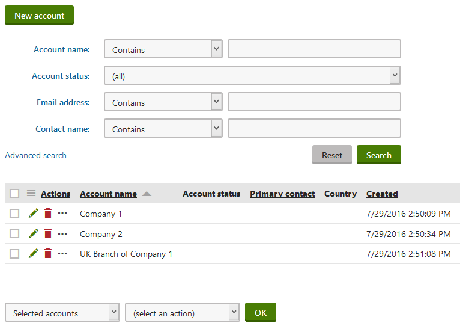
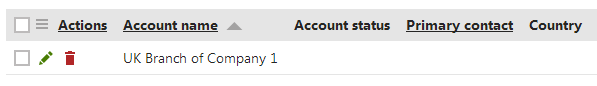
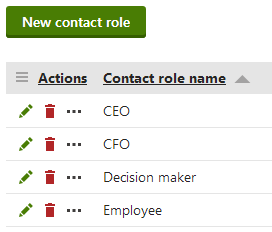

Organizing contacts into accounts
Accounts represent organizations, i.e. companies or other commercial or non-commercial bodies. You can use accounts to categorize your contacts based on their affiliations. You can create accounts as subsidiaries of other accounts.
Managing accounts
You can manage accounts on the Accounts tab of the Contact management application:

Managing accounts
Click New account to manually create new accounts.
When editing an account, you can fill in the following default fields on the General tab:
|
Section |
Fields |
|
General |
|
|
Address |
|
You can leave Notes about the account. Click Insert timestamp to insert your timestamp into the notes – the default stamp contains the full name of your user account and the current date and time.
Adding custom fields to accounts
If you need to store data for accounts in addition to the default fields, you can define custom fields:
Open the Modules application.
Edit (
 ) the Contact management module.
) the Contact management module.Open the Classes tab.
Edit (
) the Contact management - Account class.Switch to the Fields tab.
Create a new field based on your needs.
You can view and edit the values of your new fields on the Custom fields tab of the account editing interface.
Kentico EMS required
Features described on this page require the Kentico EMS license.
Creating subsidiaries
You can organize accounts into a hierarchical structure of subsidiaries. Each account can have any number of child accounts as subsidiaries.
To set an account as a subsidiary of a different account:
Open the Contact management application on the Accounts tab.
Edit (
) an account.Select the parent account in the Subsidiary of field on the General tab.
Click Save.
You can view all subsidiaries of an account on the Subsidiaries tab of the account editing interface.
Click Add accounts to set other accounts as subsidiaries of the edited account
Click View account details (
) to open the editing interface of individual subsidiary accountsYou can Remove ( ) subsidiaries (does not delete the account itself, only cancels the subsidiary relationship between the accounts)

Viewing account subsidiaries
Assigning statuses to accounts
You can label accounts with statuses to reflect their relationship with your organization or to indicate how you perceive them from a marketing point of view.
You can create, rename or delete the statuses in the Contact management application on the Configuration -> Account status tab.
To set a status for an account:
Open the Contact management application on the Accounts tab.
Edit (
) an account.Select an Account status on the General tab.
Accounts can only have one status at a time.
Click Save.
The status appears in lists of accounts and you can use it when filtering.
Adding contacts to accounts
To add contacts to an account:
Open the Contact management application on the Accounts tab.
Edit (
) an account.Open the Contacts tab.
Click Add contacts.
Select contacts.
(Optional) Select contact role for the contacts in accounts.
Click OK.
The Contacts tab shows a list of all contacts in the account.
Click View contact details (
 ) to open the editing interface of individual contacts.
) to open the editing interface of individual contacts.Click Select contact role ( ) to open the interface for selecting contact roles.
You can Remove ( ) contacts from the account.
You can also view and manage the accounts of individual contacts on the Accounts tab of the contact editing interface.
Tip: You can create marketing automation processes that add or remove contacts to/from accounts.
Primary and secondary contacts
You can designate a primary and secondary contact for each account. For example, you can use these contacts to identify the company's CEO or any other relevant employee.
Open the account's General tab.
Select a Primary and Secondary contact from the list of the account's contacts.
(Optional) Set the contact roles of the primary and secondary contacts.
Click Save.
Assigning contact roles to contacts in accounts
You can specify roles for contacts in accounts. Roles typically represent the job position or other type of competence that the contact has within the organization, such as CEO, CFO, Decision maker. Contacts can have only one role in each account.
To set roles for contacts within accounts:
Open the Contact management application on the Accounts tab.
Edit (
) the account.Open the Contacts tab.
Click Select contact role for specific contacts.
Select the role.
Click OK.
You can add roles to multiple contacts using the options below the list:
Select the contacts:
All contacts
Selected contacts - mark specific contacts using the checkboxes on the left side of the list.
Choose the Select contact role action.
Click OK.
Select the target contact role.
The roles appear in the account's contact lists.
Tip: You can also assign roles when editing specific contacts on the Accounts tab of the contact editing interface.
Managing contact roles
Contacts in accounts can be assigned a role from a predefined set of contact roles. Each contact can only have one role in an account. You can create, rename or delete the roles in the Contact management application on the Configuration -> Contact role tab.
Click New contact role to create new roles.

Managing contact roles